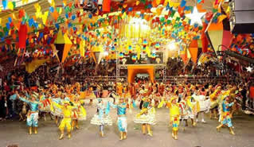
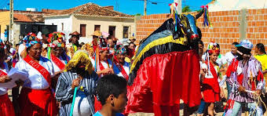
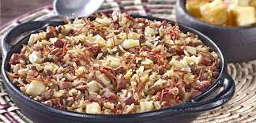
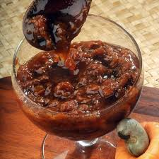
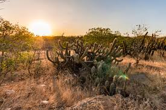

A cultura do Nordeste apresenta características próprias herdadas da interação da cultura dos colonizadores portugueses, dos negros e dos índios.
É importante destacar que a cultura representa uma complexa teia. Nela estão incluídos conhecimentos, costumes, artes, crenças, cultos religiosos, literatura popular, danças e hábitos de determinado grupo.
A cultura do Nordeste brasileiro (que compreende os estados do Maranhão, Piauí, Ceará, Rio Grande do Norte, Paraíba, Pernambuco, Alagoas, Sergipe e Bahia) desenvolveu hábitos próprios com relação ao mundo e às manifestações culturais. Esses hábitos foram transmitidos de geração em geração.
Tópicos desse artigo
- Cultura nordestina
- Festas populares nordestinas
- Culinária nordestina
- Costumes nordestino
- Clima e vegetação nordestina
- Relevo e hidrografia
- Curiosidades nordestina
- Estados da região nordeste
Cultura nordestina
A cultura do nordeste apresenta características próprias herdadas da influência da cultura dos colonizadores portugueses, dos negros e dos índios.
Cabe destacar que a cultura representa uma complexa teia, na qual estão contidos os conhecimentos, os costumes, as artes, as crenças, os cultos religiosos, a literatura popular, as danças e os hábitos de determinado grupo ou região.
Algumas das manifestações culturais que mais se destacam na região nordeste do Brasil são: a poesia popular, o artesanato, as festas juninas, o Reisado, a capoeira, o carnaval (frevo), a culinária e as religiões afro-brasileiras.
Festas populares nordestinas
Festas juninas
As festas juninas ocorrem no mês de junho e são as principais festas representativas da cultura do nordeste. Festejadas com danças típicas como a quadrilha e o forró, bandeirolas, balões e fogos de artifício fazem homenagem aos santos católicos Santo Antônio (13/06), São João (24/06) e São Pedro (29/06).
As comidas de milho e de coco são típicas da época, entre elas a canjica, a pamonha, o bolo de milho, o pé de moleque preparado com massa de mandioca, o milho assado, o milho cozido, o quentão, entre outras.
Reisado
É uma festa católica que celebra a visita dos Reis Magos ao menino Jesus. Essa festa faz parte da cultura do nordeste, sendo festejada em alguns estados, entre eles Alagoas e Piauí. O Reisado ou Folia dos Reis reúne um grupo de foliões que, trajados com roupas típicas, enfeitadas de fitas e espelhos, visitam as casas das pessoas hospitaleiras, dançando e cantando as músicas típicas da festa.
Culinária nordestina
A culinária nordestina foi formada através da influência das culinárias portuguesa, indígena e africana. A mistura de sabores e temperos foi sendo, aos poucos, sendo formado durante o período colonial.
Os pratos da culinária da região Nordeste caracterizam-se pela presença marcante de temperos fortes e apimentados.
Carne seca (carne de sol ou jabá), peixes e frutos do mar são presenças marcantes quase obrigatórias na culinária do Nordeste
Os pratos típicos da culinária nordestina são: moqueca, vatapá, buchada de bode, acarajé, sarapatel e sururu.

No café da manhã é comuns a presença da tapioca (feita com farinha de mandioca) e o cuscuz (feito com farinha de milho e leite).
Como no Nordeste é grande a produção de cana-de-açúcar, o melado é muito usado na elaboração de pratos doces. A rapadura também é muito consumida na região.
As frutas tropicais (manga, caju, abacaxi, acerola, etc) são muito usadas na produção de doces (compotas) e também consumidas in natura.
A canjica, que no Nordeste é feita com milho, é uma espécie de pudim, também muito consumida como sobremesa.
6 Costumes nordestino
1- Cobrir os espelhos em dia de chuva
Essa tradição típica do Ceará ainda hoje é praticada pelos mais antigos, que acreditam que em dias chuvosos que são cheios de trovões e raios é preciso cobrir os espelhos da casa com panos, pois caso contrário o objeto poderia "atrair" as descargas elétricas.
2- Jogar o dente de leite em cima do telhado
Segundo a tradição, jogar os dentinhos de leite das crianças sobre o telhado de sua própria casa ou até mesmo no mar, pode trazer sorte e bons presságios.
3- Adora comer cuscuz com leite
Que o cuscuz é bastante consumido no Nordeste, isso todo mundo sabe! O prato que é originário da Arábia, pode ser preparado como uma iguaria doce ou salgada. Mas no Nordeste existe também uma nova "modalidade" e releitura da receita, que é o famoso cuscuz com leite.
4- Dormir em rede
Se para muitos a ideia pode soar um tanto quando desconfortável, saiba que uma rede bem "espichada" é muito valorizada pelos Nordestinos, que garantem, depois que você passa a dormir em uma delas, nunca mais vai querer voltar para a cama!
5- Evitar comidas e bebidas quentes em dias de chuva
Se no restante do país o apreciado mesmo é tomar um chazinho ou sopinha bem quente em dias de chuva, no Nordeste essa tradição é invertida. O motivo para isso é o medo de pegar "trombose", o que é cientificamente conhecido como "Acidente Vascular Cerebral"
6- Reisado
Uma das festas comemorada nessa região do país, é a chamada Reisado ou festas dos Reis, que não é celebrada nos demais estados do Brasil.
A festa celebra a visita feita pelos 3 reis magos ao menino Jesus. Nessa festa os foliões se caracterizam com roupas especiais, e visitam as casas das pessoas consideradas hospitaleiras.
Voltar
Clima e vegetação nordestina
Na Região Nordeste é possível identificar três tipos de climas: tropical, semi-árido e equatorial úmido. O primeiro possui elevadas temperaturas e duas estações bem definidas, sendo uma seca e uma chuvosa, os índices pluviométricos anuais oscilam entre 1.800 a 2.000 mm e temperaturas que variam entre 24ºC e 26ºC. O segundo possui temperaturas elevadas e chuvas irregulares, essa característica climática faz com que as áreas influenciadas sejam secas devido aos longos períodos de estiagem e no terceiro existe a predominância de uma grande umidade relativa do ar,  além disso, demonstra elevadas temperaturas com chuvas regulares durante todo o ano.
O que mais se destaca em uma paisagem é a vegetação, desse modo, a composição vegetativa de um lugar é resultado do clima que influencia uma determinada região. Nos lugares de clima equatorial apresenta-se a floresta latifoliada equatorial, entre o Maranhão e o Piauí apresenta a Mata de Cocais, na parte litorânea a paisagem já foi composta pela floresta Atlântica, no interior predomina a caatinga em áreas secas.
Relevo e hidrofia
Os estados de Alagoas, Bahia, Ceará, Maranhão, Paraíba, Pernambuco, Piauí, Rio Grande do Norte e Sergipe estão sobre um extenso planalto antigo e aplainado pela erosão.
No que diz respeito à hidrografia da Região Nordeste, o rio São Francisco é um dos mais importantes do país, especialmente no Nordeste que é utilizado pelos sertanejos para o transporte de pessoas e mercadorias, além de abastecimento de água para diversas utilizações como irrigação.
Curiosidades nordestina
1- O Nordeste é a região com mais estados no país
A Região Nordeste é composta por nove estados (Alagoas, Ceará, Bahia, Paraíba, Maranhão, Piauí, Pernambuco, Rio Grande do Norte e Sergipe), o maior número entre as regiões brasileiras.
Como não poderia deixar de ser, também se divide em quatro sub-regiões, em virtude das variações encontradas em seu território. Por isso, fala-se nas regiões do meio-norte, sertão, agreste e zona da mata.
2- A Bahia é o maior estado da região Nordeste
O maior estado da região é a Bahia, cujo formato lembra o próprio mapa do Brasil! Tamanha extensão territorial faz com que o estado faça divisa com mais oito – Alagoas, Sergipe, Pernambuco, Piauí, Minas Gerais, Espírito Santo, Goiás e Tocantins. Como resultado, temos uma cultura riquíssima e influenciada por todos eles.
3- O Nordeste já sediou a capital federal do país
Ainda no quesito capitais, Salvador foi a primeira capital federal do Brasil, entre 1549 e 1763. No ano de 1763 a cidade do Rio de Janeiro assumiu o posto.
4- A maior produção de cacau do Brasil vem da Bahia
Além de ter o maior número de fronteiras estaduais, a Bahia também é responsável por 95% da produção de cacau do Brasil!
5- O Nordeste tem a capital estadual mais antiga do Brasil
Recife, capital de Pernambuco, foi fundada em 1537 sendo, então, a capital de estado mais antiga do Brasil. E não é a única a sustentar títulos exclusivos, como mostra o próximo item da nossa lista!
Esconder
Estados da região nordeste
Maranhão (MA)
O Maranhão tem uma área de 331.937.450 km² e faz limites com os estados do Pará, Tocantins e Piauí.
O clima é o tropical úmido, com temperaturas que variam entre 21°C e 34°C e duas estações definidas: a estação chuvosa, que vai de janeiro a julho, e a seca que se estende entre os meses de agosto a dezembro.
A maior parte do relevo maranhense é plana, com um litoral de 640 km de praias, entre elas Ponta d'Areia, São Marcos e Calhau. O interior é dominado pelo planalto que se caracteriza por seu aspecto de chapada ou tabuleiro.
Uma das atrações deste estado é o Parque Nacional dos Lençóis Maranhenses situado no litoral norte, distante 260 km da capital. Trata-se de uma unidade de conservação ambiental com 155 mil hectares de dunas, rios, lagoas e manguezais.
No seu entorno, o Polo Parque dos Lençóis abrange os municípios de Barreirinhas, Humberto de Campos, Primeira Cruz e Santo Amaro.
Piauí (PI)
O Piauí tem uma área de 251.577.738 km² e faz limite com os estados do Maranhão, Ceará, Pernambuco, Bahia e Tocantins.
Sua capital, Teresina, é a única do nordeste que não está localizada no litoral.
O clima é tropical litorâneo na costa, com verão úmido e inverno seco. No interior do estado, o clima é o tropical semiárido, com chuvas irregulares ao longo do ano, com temperaturas que variam entre 25 °C e 40 °C.
O relevo apresenta uma planície litorânea e as serras da Ibiapaba, Araripe, Tabatinga e Mangabeiras, ao longo dos limites com os estados do Ceará, Pernambuco e Bahia.
O Vale do Gurgueia, onde estão 87 municípios, guarda a maior reserva de água subterrânea do Nordeste e a terceira do país.
Além disso, o Piauí abriga o Parque Nacional da Capivara, a maior área de concentração de sítios pré-históricos do continente sul-americano e considerado Patrimônio Cultural da Humanidade.
Ceará (CE)
O Ceará tem uma área de 148.920.472 km² e faz limite com os estados do Piauí, Pernambuco, Paraíba, Rio Grande do Norte e o Oceano Atlântico.
A capital é Fortaleza que possui 34 km de praias. O clima é o tropical úmido, sem variações significativas de temperatura ao longo do ano. Na região das serras, encontramos o clima tropical semiárido, com temperaturas que variam entre 20 °C a 30 °C.
O relevo é caracterizado pela planície litorânea, por serras e chapadas, porém o sul do estado está incluído no Polígono das Secas.
Sendo assim, o estado apresenta vegetações distintas como a caatinga, no interior; e a litorânea, formada por manguezais, a vegetação de praias arenosas, dunas e as restingas.
O litoral do Ceará se estende por 573 km, com grandes falésias e dunas que chegam a 30 metros de altitude. Além disso, apresenta praias de águas mornas, entre elas: Aracati, Canoa Quebrada e Jericoacoara.
Rio Grande do Norte (RN)
O Rio Grande do Norte possui uma área de 52.811.047 km² e faz limite com Ceará, Paraíba e o Oceano Atlântico.
Sua capital é Natal, um centro turístico com lindas praias, entre elas, Ponta Negra com o Morro do Careca, u/ma duna com 107 metros, margeada por vegetação costeira. Do mesmo modo, o litoral riograndense é responsável pela produção de 95% do sal produzido no país.
O clima é o tropical úmido, na Zona da Mata, onde o relevo é caracterizado pela planície litorânea e a vegetação guarda resquícios da Mata Atlântica.
No interior do estado, o Planalto da Borborema impede a chegada dos ventos úmidos e, assim, predomina o clima tropical semiárido, com temperaturas que variam entre 24 °C e 30 °C e vegetação caatinga.
>A cidade de Natal abrigou uma importante base aérea durante a Segunda Guerra Mundial, chamada o "Trampolim da Vitória". Igualmente, se encontra perto da capital, a "Barreira do Inferno", uma base da Força Aérea Brasileira para lançamento de foguetes localizada no município de Parnamirim.
Paraíba (PB)
A Paraíba tem uma área de 56.469.778 km² e faz limite com Ceará, Rio Grande do Norte, Pernambuco e o Oceano Atlântico.
Sua capital, João Pessoa, foi considerada, em 1992, a segunda capital mais verde do mundo.
O clima predominante na costa é tropical úmido, com alguns trechos da Mata Atlântica e uma área de transição, o agreste, com temperaturas que variam entre 24 °C e 30 °C.
O relevo é caracterizado pela planície litorânea da Zona da Mata e o Planalto da Borborema, que faz o interior do ter um clima tropical semiárido.
A praia de Ponta do Seixas, situada a leste de João Pessoa, é o ponto mais oriental das Américas e é conhecida como "Porta do Sol"
Pernambuco (PE)
Pernambuco possui uma área de 98.148.323 km² e faz limite com o Ceará, Paraíba, Alagoas, Bahia, Piauí e o Oceano Atlântico.
Sua capital, Recife, cercada de rios e pontes, é denominada a "Veneza Brasileira" e possui um dos centros históricos mais importantes do país, devido à importância que esta cidade teve no período colonial.
O clima predominante na zona costeira é o tropical úmido, onde o relevo é caracterizado pela planície litorânea. No interior do estado, encontramos o clima tropical semiárido, com temperaturas médias entre 18 °C e 27 °C no inverno e 30 °C e 35 °C no verão.
Na Zona do Agreste temos o cerrado e o Planalto da Borborema faz com que grande parte do estado esteja incluída no Polígono das Secas, onde predomina a caatinga.
Um dos pontos turísticos do estado é o arquipélago de Fernando de Noronha formado por 21 ilhas e ilhotas, que forma o Parque Nacional Marinho e é local de mergulho recreativo. Também Porto de Galinhas, no litoral sul do estado, foi eleita por dez vezes a melhor praia do país.
Alagoas (AL)
Alagoas possui uma área de 27.778.506 km² e faz limite com Pernambuco, Sergipe, Bahia e o Oceano Atlântico.
Sua capital, Maceió, destaca-se por praias de águas quentes e arrecifes que formam piscinas naturais.
O clima é o tropical úmido, no litoral, onde está a planície litorânea, e ali a vegetação típica é a floresta tropical. No interior temos o clima tropical semiárido, e o estado tem 44,3% do seu território no Polígono das Secas, onde predomina a caatinga. Quanto à temperatura, se verifica no litoral, uma média entre 23 °C e 28 °C, enquanto no sertão, os termômetro oscilam entre 17 °C e 33 °C.
Uma das atrações turísticas locais é o passeio de barco entre os cânions de rio São Francisco. Na cidade de Piaçabuçu, a foz do "Velho Chico", como o rio também é conhecido, forma imensas dunas e lagoas atraindo visitantes de todo País.
A praia do Peba, área de proteção ambiental, abriga um rico ecossistema em mangues, coqueiros, dunas, tartarugas, aves migratórias e Mata Atlântica.
Sergipe (SE)
Sergipe possui 21.915.116 km² de área e faz limite com Alagoas, Bahia e o Oceano Atlântico. É considerado o menor estado brasileiro em extensão territorial.
Sua capital, Aracaju, tem como principal atração a praia de Atalaia, situada a 9 km do centro da cidade, com sua ampla faixa de areia e águas mornas.
O clima é o tropical úmido, no litoral e o semiárido, no interior do estado, com temperaturas que variam entre 21 °C e 30 °C. O relevo é caracterizado pela planície litorânea, áreas de várzeas, planaltos e depressões. A vegetação predominante na costa é a litorânea, com traços da Mata Atlântica; e no interior, a caatinga.
Uma das atrações turísticas do estado é o Cânion de Xingó, um dos maiores do mundo, no município de Canindé do São Francisco, 213 km de Aracaju. Inclui passeios a bordo de escunas que cortam as águas do rio São Francisco.
Bahia (BA)
Bahia tem uma área de 564.733.177 km², o que faz deste estado o maior em extensão territorial da Região Nordeste. O estado faz limite com Piauí, Pernambuco, Alagoas, Sergipe, Espírito Santo, Minas Gerais, Goiás e Tocantins.
Sua capital, Salvador, foi a primeira do Brasil e conserva casarões do século XVIII no Centro Histórico do Pelourinho.
O clima é o tropical úmido, onde predomina a vegetação litorânea e a Mata Atlântica. No interior do estado temos tropical semiárido (verão úmido e inverno seco), com média de temperatura de 30 °C, onde verificamos a presença da caatinga e do cerrado.
O litoral da Bahia tem 1.181 km de extensão e é o maior do Brasil, com coqueirais e belas praias, entre as quais, Mangue Seco, Porto de Sauípe, Praia do Forte, Itaparica e Comandatuba.
Esconder